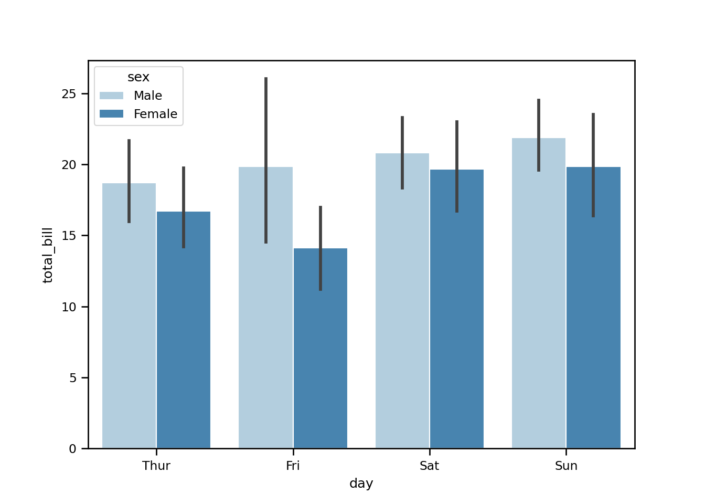
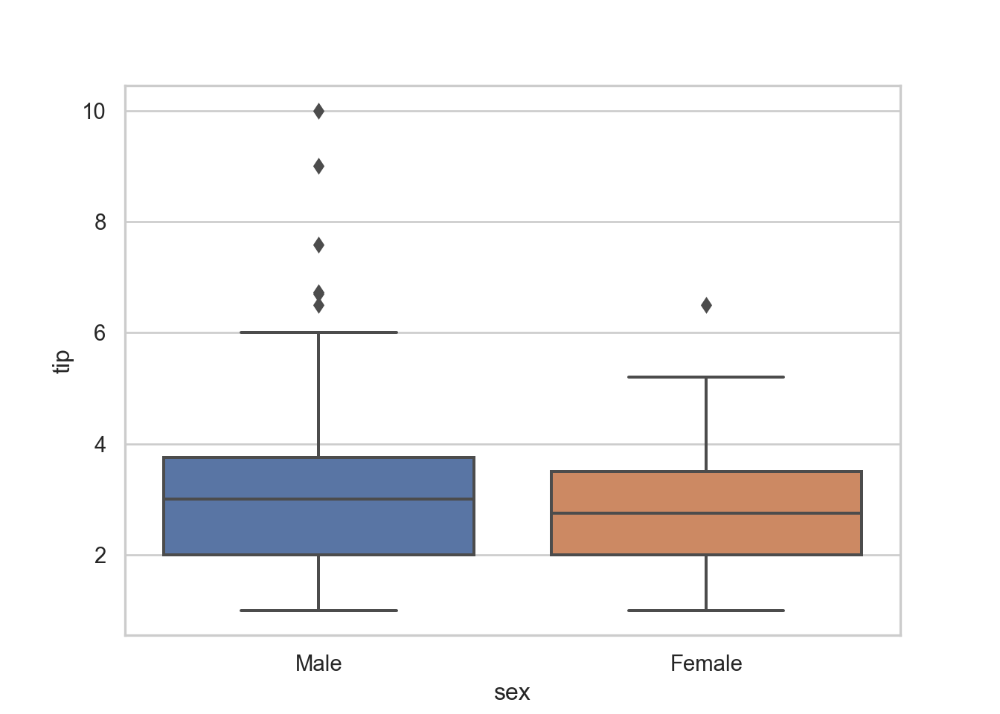
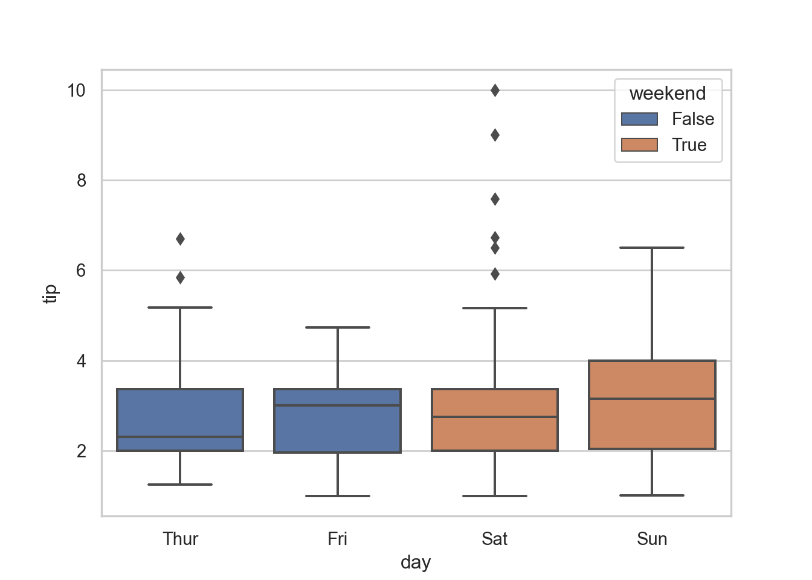
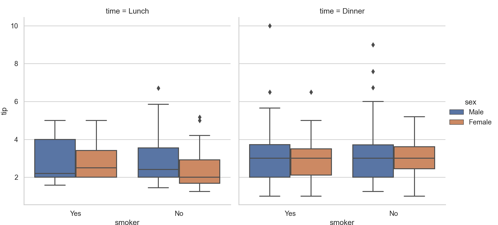
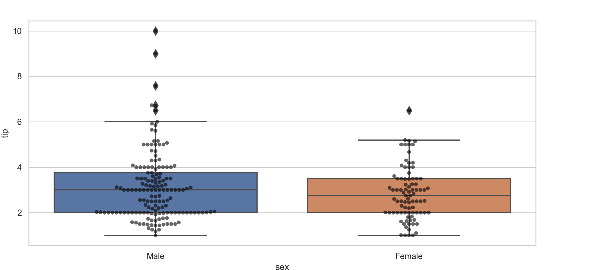

Chapter - 6 Basics Python
Class given by: Alberto Santini
y = 5 + 5
y[1] 10Printing characters
print('Hello, readers!')[1] "Hello, readers!"Printing numbers
print(15)[1] 15Printing length of a value
Length = len('Danielle')
print(Length)8Creating own functions:
Saying hello + name
def printing_name(name):
print('Good morning,', name)
printing_name('Danielle')Good morning, DanielleMultiple arguments:
Saying hello + name + location
def welcome(name, location):
print("Good morning", name, "Welcome to", location)
welcome("Danielle,", "class.")Good morning Danielle, Welcome to class.6.1 Data set
Loading the data set & viewing head + tails:
sns.set_context('paper')
tips = sns.load_dataset('tips')
tips.head() total_bill tip sex smoker day time size
0 16.99 1.01 Female No Sun Dinner 2
1 10.34 1.66 Male No Sun Dinner 3
2 21.01 3.50 Male No Sun Dinner 3
3 23.68 3.31 Male No Sun Dinner 2
4 24.59 3.61 Female No Sun Dinner 4tips.tail() total_bill tip sex smoker day time size
239 29.03 5.92 Male No Sat Dinner 3
240 27.18 2.00 Female Yes Sat Dinner 2
241 22.67 2.00 Male Yes Sat Dinner 2
242 17.82 1.75 Male No Sat Dinner 2
243 18.78 3.00 Female No Thur Dinner 2Basic stats
- Length of the variable
- Shape: Number of rows and number of columns
- Type of variables + basic info
- Descriptive statistics variable
len(tips)244tips.shape(244, 7)tips.info()<class 'pandas.core.frame.DataFrame'>
RangeIndex: 244 entries, 0 to 243
Data columns (total 7 columns):
# Column Non-Null Count Dtype
--- ------ -------------- -----
0 total_bill 244 non-null float64
1 tip 244 non-null float64
2 sex 244 non-null category
3 smoker 244 non-null category
4 day 244 non-null category
5 time 244 non-null category
6 size 244 non-null int64
dtypes: category(4), float64(2), int64(1)
memory usage: 7.3 KBtips.describe() total_bill tip size
count 244.000000 244.000000 244.000000
mean 19.785943 2.998279 2.569672
std 8.902412 1.383638 0.951100
min 3.070000 1.000000 1.000000
25% 13.347500 2.000000 2.000000
50% 17.795000 2.900000 2.000000
75% 24.127500 3.562500 3.000000
max 50.810000 10.000000 6.000000Reading from a csv file with pandas:
import pandas as pd
d = pd.read_csv('www/auto-mpg.csv')d.mpg.mean().round() # rounding by amount of decimals23.0d.dtypes # describes the type of variablesmpg float64
cylinders int64
displacement float64
hp float64
weight float64
acceleration float64
year int64
origin int64
dtype: objectpd.to_numeric(d.hp) # transforms to numerical0 130.0
1 165.0
2 150.0
3 150.0
4 140.0
...
387 86.0
388 52.0
389 84.0
390 79.0
391 82.0
Name: hp, Length: 392, dtype: float64Descriptive statistics:
d.mpg.mean()23.445918367346938d.mpg.median()22.75d.mpg.max()46.6d.mpg.min()9.0d.mean() # mean for all columnsmpg 23.445918
cylinders 5.471939
displacement 194.411990
hp 104.469388
weight 2977.584184
acceleration 15.541327
year 75.979592
origin 1.576531
dtype: float64d.describe().round(2).head() # statistics for the whole data set, rounded to two decimals mpg cylinders displacement ... acceleration year origin
count 392.00 392.00 392.00 ... 392.00 392.00 392.00
mean 23.45 5.47 194.41 ... 15.54 75.98 1.58
std 7.81 1.71 104.64 ... 2.76 3.68 0.81
min 9.00 3.00 68.00 ... 8.00 70.00 1.00
25% 17.00 4.00 105.00 ... 13.78 73.00 1.00
[5 rows x 8 columns]d[['year']] # defines a list of one variable year
0 70
1 70
2 70
3 70
4 70
.. ...
387 82
388 82
389 82
390 82
391 82
[392 rows x 1 columns]d[['year', 'cylinders']] # defines a list of multiple variables year cylinders
0 70 8
1 70 8
2 70 8
3 70 8
4 70 8
.. ... ...
387 82 4
388 82 4
389 82 4
390 82 4
391 82 4
[392 rows x 2 columns]d.year.unique() # gives me the unique values of that column, not the repetitionsarray([70, 71, 72, 73, 74, 75, 76, 77, 78, 79, 80, 81, 82])6.2 Matrixes
Series:
Panda series method:
Serie1 = pd.Series(
[4200, 8000, 6500],
index=["Amsterdam", "Toronto", "Tokyo"]
)
Serie1Amsterdam 4200
Toronto 8000
Tokyo 6500
dtype: int64Python dictionary method:
Serie2 = pd.Series({"Amsterdam": 5, "Tokyo": 8})
Serie2Amsterdam 5
Tokyo 8
dtype: int64Data frame method + combining sets:
Combined_serie = pd.DataFrame({
"Revenue": Serie1,
"Employee_count": Serie2
})
Combined_serie Revenue Employee_count
Amsterdam 4200 5.0
Tokyo 6500 8.0
Toronto 8000 NaNSub-setting by row:
Combined_serie["Tokyo":] Revenue Employee_count
Tokyo 6500 8.0
Toronto 8000 NaN6.3 Filtering a data set
d77 = d[d.year == 77] #filters the data set to all observations that are equal to a certain value of a variable
d77 = d[d.year != 77] #filters the data set to all observations that are NOT equal to a certain value of a variable
d77 = d[d.year <= 77] # filters those that are smaller than a value
d77 = d[d.year >= 77] # filters those that are large than a value
d77 = d[(d.year >= 77) & (d.year <= 90)] # in between certain values
d77 = d[(d.year == 80) | (d.year == 90)] # those from one value OR another
d77 = d[~(d.year == 70)] # excludes the valuesAggregating
dm = d.groupby('year').mean()
dm = d.groupby(['year', 'cylinders']).mean()
dm = d.groupby(['year', 'cylinders']).median()
dm = d.groupby(['year', 'cylinders']).mean()['mpg'] # for selected variables onlyPivot table
d.pivot_table(index='year', columns='cylinders', values='mpg').round()cylinders 3 4 5 6 8
year
70 NaN 25.0 NaN 20.0 14.0
71 NaN 28.0 NaN 18.0 13.0
72 19.0 23.0 NaN NaN 14.0
73 18.0 23.0 NaN 19.0 13.0
74 NaN 28.0 NaN 17.0 14.0
75 NaN 25.0 NaN 18.0 16.0
76 NaN 27.0 NaN 20.0 15.0
77 22.0 29.0 NaN 20.0 16.0
78 NaN 30.0 20.0 19.0 19.0
79 NaN 32.0 25.0 23.0 19.0
80 24.0 35.0 36.0 26.0 NaN
81 NaN 33.0 NaN 23.0 27.0
82 NaN 32.0 NaN 28.0 NaNd.pivot_table(index='year', columns='cylinders', values='mpg').round().fillna('')cylinders 3 4 5 6 8
year
70 25.0 20 14
71 28.0 18 13
72 19 23.0 14
73 18 23.0 19 13
74 28.0 17 14
75 25.0 18 16
76 27.0 20 15
77 22 29.0 20 16
78 30.0 20 19 19
79 32.0 25 23 19
80 24 35.0 36 26
81 33.0 23 27
82 32.0 28 Creating new columns starting from existing columns
d['nam_of_new_column'] = d.mpg * 2Through the package numpy:
import numpy as np
d['sqrt_of_mpg_2'] = np.sqrt(d.mpg)
d['log(10)_of_mpg'] = np.log10(d.mpg)Dropping / deleting columns
d['double_mpg'] = d.mpg * 2
del(d['double_mpg']) # deleting columns
d.drop(columns=['sqrt_of_mpg_2', 'log(10)_of_mpg', 'nam_of_new_column']).head() # dropping columns mpg cylinders displacement hp weight acceleration year origin
0 18.0 8 307.0 130.0 3504.0 12.0 70 1
1 15.0 8 350.0 165.0 3693.0 11.5 70 1
2 18.0 8 318.0 150.0 3436.0 11.0 70 1
3 16.0 8 304.0 150.0 3433.0 12.0 70 1
4 17.0 8 302.0 140.0 3449.0 10.5 70 16.4 Data imputation
pd.to_numeric(d.hp, errors='coerce').head()0 130.0
1 165.0
2 150.0
3 150.0
4 140.0
Name: hp, dtype: float64d.hp = pd.to_numeric(d.hp, errors='coerce')
d[d.hp.isna()] # transform values to NAEmpty DataFrame
Columns: [mpg, cylinders, displacement, hp, weight, acceleration, year, origin, nam_of_new_column, sqrt_of_mpg_2, log(10)_of_mpg]
Index: []d[-(d.hp.isna())] # delete missing values mpg cylinders ... sqrt_of_mpg_2 log(10)_of_mpg
0 18.0 8 ... 4.242641 1.255273
1 15.0 8 ... 3.872983 1.176091
2 18.0 8 ... 4.242641 1.255273
3 16.0 8 ... 4.000000 1.204120
4 17.0 8 ... 4.123106 1.230449
.. ... ... ... ... ...
387 27.0 4 ... 5.196152 1.431364
388 44.0 4 ... 6.633250 1.643453
389 32.0 4 ... 5.656854 1.505150
390 28.0 4 ... 5.291503 1.447158
391 31.0 4 ... 5.567764 1.491362
[392 rows x 11 columns]6.5 Data visualization
Correlation matrix
d.corr().round(decimals=2) mpg cylinders ... sqrt_of_mpg_2 log(10)_of_mpg
mpg 1.00 -0.78 ... 1.00 0.98
cylinders -0.78 1.00 ... -0.81 -0.83
displacement -0.81 0.95 ... -0.83 -0.85
hp -0.78 0.84 ... -0.81 -0.83
weight -0.83 0.90 ... -0.86 -0.88
acceleration 0.42 -0.50 ... 0.44 0.45
year 0.58 -0.35 ... 0.58 0.58
origin 0.57 -0.57 ... 0.57 0.56
nam_of_new_column 1.00 -0.78 ... 1.00 0.98
sqrt_of_mpg_2 1.00 -0.81 ... 1.00 1.00
log(10)_of_mpg 0.98 -0.83 ... 1.00 1.00
[11 rows x 11 columns]Pair plot
# sns.pairplot(d, hue='origin'); # with colorBar plot
sns.set_context('paper')
tips = sns.load_dataset("tips")
tips.head() total_bill tip sex smoker day time size
0 16.99 1.01 Female No Sun Dinner 2
1 10.34 1.66 Male No Sun Dinner 3
2 21.01 3.50 Male No Sun Dinner 3
3 23.68 3.31 Male No Sun Dinner 2
4 24.59 3.61 Female No Sun Dinner 4sns.barplot(x = 'day', y = 'total_bill', hue = 'sex', data = tips, palette = 'Blues', edgecolor = 'w')
plt.show()
tips.groupby(['day','sex']).mean() total_bill tip size
day sex
Thur Male 18.714667 2.980333 2.433333
Female 16.715312 2.575625 2.468750
Fri Male 19.857000 2.693000 2.100000
Female 14.145556 2.781111 2.111111
Sat Male 20.802542 3.083898 2.644068
Female 19.680357 2.801786 2.250000
Sun Male 21.887241 3.220345 2.810345
Female 19.872222 3.367222 2.944444Box plot
tips = sns.load_dataset("tips")
sns.set_theme(style="whitegrid")
sns.boxplot(data=tips, x='sex', y='tip')
plt.show()
sns.boxplot(data=tips, x='sex', y='tip', color='black', boxprops=dict(alpha=.6))
plt.show()sns.boxplot(x="day", y="total_bill", hue="smoker",
data=tips, palette="Set3")
plt.show()tips['weekend'] = tips.day.isin(['Sat', 'Sun'])
sns.boxplot(data=tips, x='day', y='tip', hue='weekend', dodge=False)
plt.show()
sns.catplot(data=tips, x='smoker', y='tip', hue='sex', col='time', kind='box');
plt.show()
6.5.1 Other categorical plots
sns.stripplot(data=tips, x='sex', y='tip');
plt.show()
sns.swarmplot(data=tips, x='sex', y='tip');
plt.show()sns.swarmplot(data=tips, x='sex', y='tip', hue='smoker');
plt.show()sns.swarmplot(data=tips, x='sex', y='tip', hue='smoker', dodge=True);
plt.show()sns.boxplot(data=tips, x='sex', y='tip', fliersize=8)
sns.swarmplot(data=tips, x='sex', y='tip', color='black', alpha=0.6);
plt.show()
sns.boxenplot(data=tips, x='sex', y='tip');
plt.show()sns.boxenplot(data=tips, x='sex', y='tip', hue='smoker');
plt.show()
sns.displot(data=tips, x='tip');
plt.show()
sns.displot(data=tips, x='tip', kind='kde');
plt.show()
Multiple plots
fig, axes = plt.subplots(nrows=1, ncols=2, figsize=(12,6))
sns.boxenplot(data=tips, x='sex', y='tip', ax=axes.flat[0]);
sns.violinplot(data=tips, x='sex', y='tip', ax=axes.flat[1]);
plt.show()
Multidimensional KDE for numeric variables
plt.rcParams['figure.figsize'] = (10,8)
sns.kdeplot(data=tips, x='tip', y='total_bill', shade=True, cbar=True);
plt.show()sns.histplot(d.mpg); # Histogram
plt.show()
sns.histplot(d.mpg, bins=20); # with binwidth
plt.show()sns.histplot(data=d, x='mpg', bins=20);
sns.histplot(data=d, x='mpg', bins=20, cumulative=True); # cumulative values
#d.origin = pd.Categorical(d.origin.replace({1: 'america', 2:'europe' 3: 'japan'}))
sns.relplot(data=d, x='hp', y='mpg', hue='origin', palette='tab10')<seaborn.axisgrid.FacetGrid object at 0x7fa5c7754da0>plt.show()
corr = d.corr()
sns.heatmap(corr) # simple
plt.show()
sns.heatmap(corr, cmap=plt.cm.RdYlGn, annot=True, linewidths=1, square=True, vmin=-1, vmax=1) # designed
plt.show()
6.6 Preparing data for modeling
from sklearn.model_selection import train_test_splitlabel = 'mpg' # Creates the input points and the output columns
features = [column for column in d.columns if column != label]Setting the train / test split
X = d[features]
y = d[label]
X_train, X_test, y_train, y_test = train_test_split(X, y, test_size=0.25)
len(X) # Size of the dataset392len(X_train) # Size of the training set294len(X_test) # Size of the test set (In this case 25% of the dataset)98There is also a way to avoid the randomness of the test selection:
X_train, X_test, y_train, y_test = train_test_split(X, y, test_size=0.25, random_state=0) # We fix the random state to a certain value to make it reproducable. 6.6.1 Creating the models
Linear regression (no hyper parameters)
Quadratic regression (no hyper parameters)
Quadratic regression with LASSO (1 hyper parameter)
from sklearn.linear_model import LinearRegression, Lassofrom sklearn.preprocessing import StandardScaler, PolynomialFeatures # automatically takes into account standardization
from sklearn.model_selection import GridSearchCV, ShuffleSplit
from sklearn.pipeline import make_pipeline
from sklearn.metrics import mean_squared_errorPipeline
A pipeline is a sequence of steps applied to the data. f.e. the first step is scaling the data and second is training the model on the training data.
Due to the package sklearn (StandardScaler), the training data is first standardized and then this is used for the training data and test data.
# Linear regression
linreg = make_pipeline(StandardScaler(), LinearRegression()
)
# Quadratic regression
quadreg = make_pipeline(StandardScaler(), PolynomialFeatures(degree=2),
LinearRegression()
)
# Quadratic regression with LASSO
quadlasso_empty = make_pipeline(StandardScaler(), PolynomialFeatures(degree=2),
Lasso(max_iter=10000)
)Training (+HP tuning)
linreg.fit(X_train, y_train) # fitting linear regressionPipeline(steps=[('standardscaler', StandardScaler()),
('linearregression', LinearRegression())])quadreg.fit(X_train, y_train) # fitting the quadratic regressionPipeline(steps=[('standardscaler', StandardScaler()),
('polynomialfeatures', PolynomialFeatures()),
('linearregression', LinearRegression())])Logarithmic scale: Standard scale but raise to the power of e.
# Creating the grid, and deciding which hyper parameters to try
np.linspace(-3, 0, 4) # Linearly spacedarray([-3., -2., -1., 0.])np.logspace(-3, 0, 4) # Logarithm scalearray([0.001, 0.01 , 0.1 , 1. ])quadlasso_empty.get_params() # tells us all the parameters that we have{'memory': None, 'steps': [('standardscaler', StandardScaler()), ('polynomialfeatures', PolynomialFeatures()), ('lasso', Lasso(max_iter=10000))], 'verbose': False, 'standardscaler': StandardScaler(), 'polynomialfeatures': PolynomialFeatures(), 'lasso': Lasso(max_iter=10000), 'standardscaler__copy': True, 'standardscaler__with_mean': True, 'standardscaler__with_std': True, 'polynomialfeatures__degree': 2, 'polynomialfeatures__include_bias': True, 'polynomialfeatures__interaction_only': False, 'polynomialfeatures__order': 'C', 'lasso__alpha': 1.0, 'lasso__copy_X': True, 'lasso__fit_intercept': True, 'lasso__max_iter': 10000, 'lasso__normalize': False, 'lasso__positive': False, 'lasso__precompute': False, 'lasso__random_state': None, 'lasso__selection': 'cyclic', 'lasso__tol': 0.0001, 'lasso__warm_start': False}We want to use lasso__alpha as the name.
grid = {'lasso__alpha': np.logspace(-3, 0, 20)}
# Log space tells it how many parameters to try. The first number: lowest value, second number: highest value, third number how many we want to generate
holdout = ShuffleSplit(test_size=.25, n_splits=1, random_state=0) # validation method holdoutGrid search object:
quadlasso = GridSearchCV(estimator = quadlasso_empty,
param_grid = grid,
cv = holdout,
scoring = 'neg_mean_squared_error' # negative to understand which is the best value
)
quadlasso.fit(X_train, y_train) # automatically refitsGridSearchCV(cv=ShuffleSplit(n_splits=1, random_state=0, test_size=0.25, train_size=None),
estimator=Pipeline(steps=[('standardscaler', StandardScaler()),
('polynomialfeatures',
PolynomialFeatures()),
('lasso', Lasso(max_iter=10000))]),
param_grid={'lasso__alpha': array([0.001 , 0.00143845, 0.00206914, 0.00297635, 0.00428133,
0.00615848, 0.00885867, 0.01274275, 0.01832981, 0.02636651,
0.0379269 , 0.05455595, 0.078476 , 0.11288379, 0.16237767,
0.23357215, 0.33598183, 0.48329302, 0.6951928 , 1. ])},
scoring='neg_mean_squared_error')6.7 Model selection
Mean Squared Error Method
mean_squared_error(y_test, linreg.predict(X_test))8.857781021481647e-29mean_squared_error(y_test, quadreg.predict(X_test))8.126877243991158e-29mean_squared_error(y_test, quadlasso.predict(X_test))3.5002060278057675e-06We choose the model with the lowest error. In this example, it is the last model.
IMPORTANT It is important to note that before using the model in production, I must retrain it on the entire data set.
We use the model on the entire data set:
winner = quadlasso.best_estimator_ # selects the best hyper parameter
winner.fit(X, y)Pipeline(steps=[('standardscaler', StandardScaler()),
('polynomialfeatures', PolynomialFeatures()),
('lasso', Lasso(alpha=0.001, max_iter=10000))])As an example, below a car has been included which was not part of our data set. We can test the model on the prediction accuracy.
seat_marbella = [4, 899 * 0.061, 41, 680 * 2.2, 19.2, 83, 2] # features loaded to compare
y_marbella = (100 * 3.78) / (1.61 * 5.1) # labels loadedNow we ask the model to predict the full efficiency of the car:
#prediction = winner.predict([seat_marbella])
#prediction[0]The real value is:
#y_marbellaWe can compare the accuracy of the prediction and the real value.
6.7.1 Leave-One-Out Cross validation (LOOCV):
from sklearn.model_selection import LeaveOneOut, cross_val_score
d = pd.read_csv('www/auto-mpg.csv')
label = 'mpg'
features = [col for col in d.columns if col != label]
X = d[features]
y = d[label]linreg = make_pipeline(StandardScaler(), LinearRegression()
)
quadreg = make_pipeline(StandardScaler(), PolynomialFeatures(degree=2),
LinearRegression()
)
quadlasso_empty = make_pipeline(StandardScaler(), PolynomialFeatures(degree=2),
Lasso(max_iter=10000)
)Creating a function: a set of instructions that we combine to provide some inputs to retrieve some outputs. This functions computers the \(\hat {ERR}_{\hat f}\) and will take as its input the model \(\hat f\):
def get_mse(model):
mses = cross_val_score(estimator=model,
X=X,
y=y,
cv=LeaveOneOut(),
scoring='neg_mean_squared_error'
)
return np.average(-mses) # takes the average of the mean square errorsCalculating the mean squared error through the leave one out method:
get_mse(linreg)11.371126332686618get_mse(quadreg)7.972887016094466.7.2 K-Fold Cross validation
K = 5 folds. The model used is the same as above.
6.7.3 SVC
Make list to create the model
# svc = make_pipeline( transformer, GridSearchCV( estimator=SVC(kernel="linear"), param_grid={ "C": np.logspace(-3, 3, 50) }, cv=kfold, n_jobs=4 ) )The default of scoring = the estimators score method, the accuracy
Fit model
#svc.fit(X_tv, y_tv)Gives us the best estimator:
#svc[1].best_estimator_If it is at the edge of the grid, make another grid closer to the extremes.
#pred = svc.predict(X_test)from sklearn.metrics import accuracy_score
from sklearn.metrics import recall_score
#accuracy_score(y_test, pred)
#recall_score(y_test, pred)